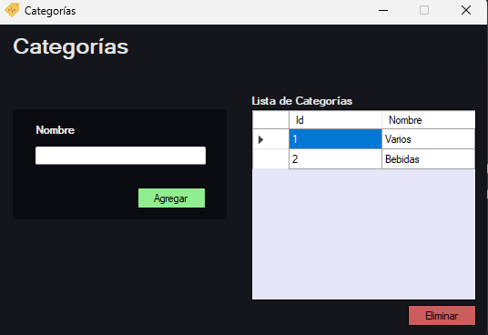
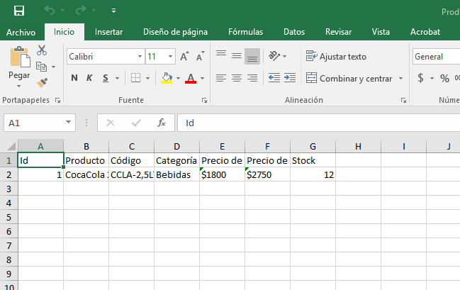
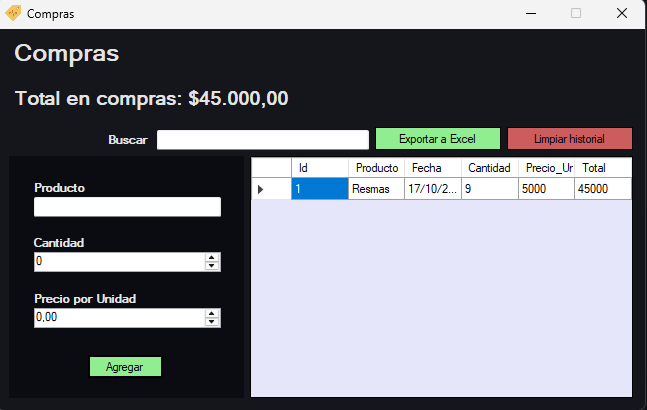

Estándar
Pro
POSKo
Creado por NSSoftware, POSKo combina una interfaz amigable con funciones esenciales para la gestión diaria del negocio, permitiendo controlar productos, ventas, clientes, compras y estadísticas con facilidad.

Cuenta con una interfaz sencilla y atractiva, fácil de entender y manejar.
Es altamente recomendable comenzar su uso con la sección categorías.
Serán la base de tus productos: comida, bebida, librería... y todos los que quieras.
En POSKo podrás llevar un registro detallado de tus productos.
Nombre, código, categoría, precio de compra y venta, y, por supuesto, stock.
Podrás agregar, editar y eliminar cualquiera en cuestión de segundos.
Además, tendrás la oportunidad de buscar por nombre y filtrarlos para visualizarlos por bajo stock. ¡Ya no podrá tomarte por sorpresa!
También puedes exportar todo a Excel.
Podrás generar tus ventas de forma rápida y clara.
Selecciona el producto, la cantidad y el tipo de pago.
Arma el carrito como quieras.
Tendrás el filtro para ver el total con o sin impuestos, aunque la cobranza siempre se hará con el impuesto aplicado elegido (puede no tener valor si lo deseas).

Podrás generar un reporte digital PDF de la venta cuando sea necesario.

Tendrás la posibilidad de revisar el historial detallado de ventas y filtrarlo por fecha.

No podía faltar: registrar tus clientes también es una opción en POSKo.
Podrás también filtrarlos para ver las deudas.

POSKo también proporciona un panel de estadísticas, revelando cada detalle de tu rendimiento.
Te recomendamos tomar decisiones a partir del análisis de tus estadísticas.
También tendrás la opción de registrar tus compras, especificando producto, cantidad y precio unitario.
Te servirá para controlar tus egresos y el retorno de la inversión

Adapta POSKo a tu negocio. Los datos que ingreses aparecerán luego en los comprobantes que emitas, y serán utilizados de diversas formas por el programa.
POSKo nace con un propósito claro: ser útil, no complejo. Cada función fue pensada para cubrir una necesidad real de los comerciantes, sin sobrecargar el sistema con opciones innecesarias. Simplicidad, estabilidad y personalización —tres pilares que hacen de POSKo una herramienta confiable para el día a día.
POSKo es sencillo, rápido y eficaz. Contactanos y obtenelo ya y la optimización será una breve cuestión de tiempo.
Esto es POSKo base. Recuerda que las funciones pueden ser adaptadas a tus necesidades.
Características Técnicas
Base de datos: SQLite (rápida y segura).
Tipo: local (se guarda en tu PC).
Compatible con Windows.
No requiere conexión a internet ni servidores externos.
Instalación liviana, interfaz intuitiva y sin dependencias complejas.
Precio actual: $41,000 ARS
Solicitar Volver